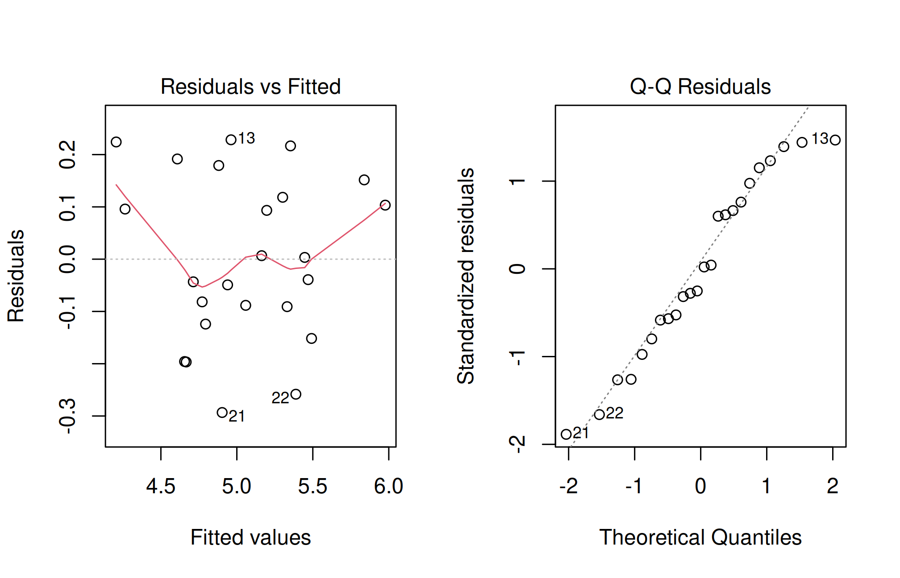

Explain replication, randomization, and local control; randomize CRD, RCBD, and Latin square layouts in R; analyse completely randomized, randomized block, Latin square, two-factor factorial, and split-plot experiments; calculate and interpret SEm, SEd, critical difference (CD), and coefficient of variation (CV); transform counts and percentages when their variance depends on the mean; and choose a mean-comparison procedure that matches the question.
The previous chapter introduced analysis of variance with one treatment factor. This chapter turns to the experiments that agricultural students actually lay out in pots, nurseries, and fields. The emphasis is on one rule that runs through every design: the analysis must follow the way treatments were randomized to experimental units.
13.2 Three principles of experimental design
R. A. Fisher’s work at Rothamsted gave agricultural research three principles that remain the foundation of every field trial.
Replication. Each treatment is applied to more than one experimental unit. Replication lets us estimate experimental error, the variation between units treated alike. Without it, a difference between two plots cannot be separated from ordinary plot-to-plot variation. More replicates also make treatment means more precise.
Randomization. Treatments are allocated to units by a chance mechanism, not by the researcher’s choice. Randomization protects comparisons from systematic bias, such as always placing the favoured treatment on the best soil, and it justifies the error estimate used in the F-test.
Local control. Units are grouped so that variation within groups is small. Blocks across a fertility gradient, rows and columns in a field with two gradients, and main plots for hard-to-change factors are all forms of local control. Grouping removes known variation from the error term and increases precision.
Identify the experimental unit first
The experimental unit is the smallest unit to which a treatment is independently applied: a pot, a plot, a tree, a tray. Five plants sampled from one plot are subsamples, not five replicates. If irrigation is applied to whole strips, the strip is the unit for irrigation even when nitrogen is varied within it. Every design in this chapter is a statement about experimental units.
A few terms recur. A treatment is a condition being compared (a variety, a fertilizer dose, a spray schedule). A factor is a set of related treatments, and its levels are the individual treatments. The response is the measurement on each unit, here usually grain yield or dry matter. Experimental error is the variation among units that received the same treatment.
13.3 Randomizing a layout in R
Randomization should be done before the experiment and recorded. sample() returns a random permutation; set.seed() makes the permutation reproducible, so the layout can be regenerated and checked later. Use a new seed for each real experiment and keep it with the field book.
13.3.1 Completely randomized layout
In a completely randomized design (CRD), every unit has the same chance of receiving any treatment. With five treatments and four replicates there are 20 units, and we randomly permute 20 treatment labels.
The table() check confirms that every treatment appears exactly four times. Write the pot numbers on labels before allocating treatments, so that the random plan, not convenience, decides which pot receives which dose.
13.3.2 Randomized complete block layout
In a randomized complete block design (RCBD), every treatment appears once in each block, and randomization is carried out separately within each block.
# Field plan: one row per block, plots in field ordermatrix(rcbd_plan$variety, nrow = blocks, byrow =TRUE,dimnames =list(paste("Block", 1:blocks), paste("Plot", 1:6)))
Each row of the field plan is a block and contains all six varieties in a different random order. Blocks should be laid out across the known gradient, so that plots within a block are as similar as possible.
13.3.3 Latin square layout
A Latin square controls variation in two directions. With five treatments, the field is divided into five rows and five columns, and each treatment appears once in every row and once in every column. A simple way to obtain a random Latin square is to start from a cyclic square and then randomly permute its rows, columns, and treatment labels.
Col 1 Col 2 Col 3 Col 4 Col 5
Row 1 "E" "C" "D" "A" "B"
Row 2 "C" "A" "B" "D" "E"
Row 3 "B" "E" "A" "C" "D"
Row 4 "A" "D" "E" "B" "C"
Row 5 "D" "B" "C" "E" "A"
# Every treatment once per row and once per columnall(apply(ls_plan, 1, function(x) length(unique(x)) == k),apply(ls_plan, 2, function(x) length(unique(x)) == k))
[1] TRUE
13.3.4 Layouts with the agricolae package
The agricolae package, widely used in agricultural statistics teaching, creates field books for many designs. Its book component lists plots, blocks, and treatments ready for printing.
library(agricolae)crd_book <-design.crd(trt = treatments, r =4, seed =2026, serie =0)head(crd_book$book)
Whichever tool you use, store the seed, the software version, and the printed plan. A layout that cannot be reproduced cannot be audited.
13.4 Quantities reported with every field experiment
Agricultural research reports in India conventionally present, below each table of treatment means, the standard error of a mean, the critical difference, and the coefficient of variation. They all come from the error mean square (MSE) of the analysis.
Table 13.1: Standard summary quantities for a single-factor design
Quantity
Formula
Meaning
SEm±
\(\sqrt{MSE/r}\)
Standard error of one treatment mean based on \(r\) replicates
SEd
\(\sqrt{2\,MSE/r}\)
Standard error of the difference between two treatment means
CD (5%)
\(t_{0.025,\ \text{error df}} \times \text{SEd}\)
Least difference between two means that is significant at 5%
CV (%)
\(100\sqrt{MSE}/\bar{y}\)
Experimental error relative to the general mean
The CV describes the precision of the experiment as a whole. Typical values depend on the crop, the character, and the conditions; yield trials commonly have smaller CVs than pest counts or weed biomass. A very high CV signals poor control of experimental error, and a very low CV in a field trial is worth double-checking for data-entry problems.
The CD is the classical least significant difference (LSD). Two treatment means that differ by more than the CD differ significantly at the 5% level, provided the F-test for treatments was significant and the comparison was of interest before the data were seen. We return to this condition in Section 13.11.
We will compute these quantities often, so we write one small function. It works for any aov() fit without an Error() term, given the number of replicates behind each mean.
design_stats <-function(fit, r, alpha =0.05) { mse <-deviance(fit) /df.residual(fit) sem <-sqrt(mse / r) sed <-sqrt(2* mse / r) cd <-qt(1- alpha /2, df =df.residual(fit)) * sed response <-fitted(fit) +residuals(fit) cv <-100*sqrt(mse) /mean(response)round(c(MSE = mse, SEm = sem, SEd = sed, CD = cd, CV_percent = cv), 3)}
deviance() of an aov fit is the residual sum of squares, and df.residual() gives its degrees of freedom. Adding the fitted values and residuals recovers the observed response, so the CV uses the general mean of the data.
13.5 Completely randomized design
A CRD is appropriate when the experimental units are homogeneous, for example pots filled from one thoroughly mixed soil, petri dishes in an incubator, or uniform nursery trays. It is rarely suitable for open field trials, where soil fertility varies from place to place.
The model is the one-way model from the previous chapter, \(Y_{ij} = \mu + \tau_i + \epsilon_{ij}\). The simulated file crd.csv records dry matter (g per pot) in a pot experiment with five nitrogen levels and four pots per level.
MSE SEm SEd CD CV_percent
5.042 1.123 1.588 3.384 9.016
Setting the factor levels puts the doses in their natural order; otherwise R sorts labels alphabetically and places N120 before N40. The F-test is highly significant, so there is strong evidence that mean dry matter differs among the nitrogen levels.
The CV is about 9%, and the CD is about 3.4 g per pot. Mean dry matter rose from about 18.3 g at N0 to about 29.3 g at N160. N40 and N80 differ by less than the CD, as do N120 and N160, so the data do not separate those adjacent pairs. Every other comparison with N0 exceeds the CD.
Because nitrogen levels are quantitative, a response curve answers the agronomic question better than a list of pairwise comparisons. A regression of dry matter on dose estimates how fast the response rises and where it levels off (see the regression chapter). Pairwise comparisons of doses are most useful when the levels are qualitative, such as varieties or products.
13.6 Randomized complete block design
The RCBD is the most widely used design in field experiments. Blocks are formed across the main gradient of soil fertility, slope, or drainage, and each block contains every treatment once. The additive model is \(Y_{ij} = \mu + \tau_i + \beta_j + \epsilon_{ij}\), where \(\beta_j\) is the effect of block \(j\).
The simulated file rcbd_varieties.csv contains grain yields (t/ha) of six rice varieties (generic labels V1 to V6) in four blocks.
rb <-read.csv("data/rcbd_varieties.csv")rb$block <-factor(rb$block)rb$variety <-factor(rb$variety)with(rb, table(variety, block)) # each variety once in each block
MSE SEm SEd CD CV_percent
0.039 0.098 0.139 0.297 3.890
The block line of the ANOVA table shows that blocks differed substantially. Including them in the model removed that variation from the error term. The varietal differences are highly significant, the CV is about 3.9%, and the CD is about 0.30 t/ha. V1 gave the highest mean yield, about 5.66 t/ha; its margin over the next variety, V3, is about 0.49 t/ha, which exceeds the CD.
13.6.1 Did blocking help?
We can compare the error mean square from the blocked analysis with the error that a CRD analysis of the same data would have produced. The relative efficiency (RE) of the RCBD compared with a CRD is
\[RE = \frac{(r-1)E_b + r(t-1)E_e}{(rt-1)E_e},\]
where \(E_b\) is the block mean square, \(E_e\) the error mean square, \(r\) the number of blocks, and \(t\) the number of treatments.
# Error mean square if blocks are ignoredanova(aov(yield_t_ha ~ variety, data = rb))["Residuals", "Mean Sq"]
[1] 0.1160444
An RE of about 2.6 means that a CRD would have needed roughly 2.6 times as many replicates to estimate the variety means with the same precision. Ignoring the blocks triples the error mean square, from about 0.039 to 0.116. Blocking was clearly worthwhile in this field. Remember, though, that blocks must be part of the analysis because they were part of the randomization, not because they happened to be useful.
13.7 Latin square design
When a field has two gradients at right angles, for example a slope in one direction and an irrigation channel along another, a Latin square removes both. Each treatment occurs once in every row and every column, so the number of replicates equals the number of treatments. This restricts the Latin square to about four to eight treatments.
The model is \(Y_{ijk} = \mu + \rho_i + \gamma_j + \tau_k + \epsilon_{ijk}\), with row (\(\rho\)), column (\(\gamma\)), and treatment (\(\tau\)) effects. The simulated file latin_square.csv compares five weed-management treatments in a 5 × 5 square.
ls <-read.csv("data/latin_square.csv")for (v inc("row", "column", "treatment")) ls[[v]] <-factor(ls[[v]])# Field plan as recordedxtabs(~ row + column, data = ls) # one plot per cell
MSE SEm SEd CD CV_percent
0.015 0.054 0.077 0.167 3.144
Both rows and columns account for significant variation, which confirms that the field had two gradients. Hand weeding gave the highest mean yield and the unweeded check the lowest. The error has \((t-1)(t-2) = 12\) degrees of freedom. With small squares, such as 4 × 4, the error degrees of freedom become few; the experiment may then be repeated as several squares.
13.8 Factorial experiments
Often we want to study two or more factors together: nitrogen dose with variety, or irrigation with mulching. In a factorial experiment, every combination of the factor levels is a treatment. A 3 × 2 factorial of three nitrogen levels and two varieties has six treatment combinations, and these are laid out like ordinary treatments, here in an RCBD.
A factorial experiment answers three questions at once:
Main effect of nitrogen: how does yield change with dose, averaged over varieties?
Main effect of variety: how do varieties differ, averaged over doses?
Interaction: does the response to nitrogen depend on the variety?
fa <-read.csv("data/factorial_rcbd.csv")fa$block <-factor(fa$block)fa$nitrogen <-factor(fa$nitrogen, levels =c("N0", "N60", "N120"))fa$variety <-factor(fa$variety)fa_fit <-aov(yield_t_ha ~ block + nitrogen * variety, data = fa)summary(fa_fit)
nitrogen * variety expands to nitrogen + variety + nitrogen:variety. The interaction is significant, so the main effects should not be interpreted on their own.
The table and plot show the pattern. At N0 the two varieties yield almost the same, but the dwarf variety responds much more strongly to nitrogen: at N120 it out-yields the tall variety by about 1.1 t/ha. The tall variety gains little beyond N60. An agronomic recommendation therefore depends on variety, and an “average response to nitrogen” would describe neither variety well.
13.8.1 Standard errors in a factorial experiment
Means of different kinds rest on different numbers of plots, so each has its own SEd. With \(r\) blocks, \(a\) levels of nitrogen, and \(b\) levels of variety:
Table 13.2: SEd for the different means of a two-factor experiment
nitrogen variety combination
SEd 0.114 0.093 0.161
CD 0.242 0.198 0.343
When the interaction is significant, compare nitrogen levels within each variety, using the combination CD. For example, the dwarf variety’s gain from N60 to N120 is about 0.75 t/ha, well above the combination CD of about 0.34 t/ha, whereas the tall variety’s gain is only about 0.28 t/ha, below it.
13.9 Split-plot design
Some factors are impractical to apply to small plots. Irrigation, tillage, and sowing date need large areas, whereas varieties or nitrogen doses can be applied to small plots. In a split-plot design, each block is divided into main plots that receive the levels of the hard-to-change factor, and each main plot is divided into subplots that receive the levels of the second factor. There are two randomizations: main-plot treatments to main plots within each block, then subplot treatments to subplots within each main plot.
Because of the two randomizations there are two error terms:
Error (a), variation among main plots treated alike, is used to test the main-plot factor. It usually has few degrees of freedom and is larger.
Error (b), variation among subplots within main plots, is used to test the subplot factor and the interaction. It is usually smaller, so subplot comparisons are more precise.
The simulated file split_plot.csv contains three irrigation schedules (main plots) and four nitrogen levels (subplots) in three blocks.
Error(block / irrigation) tells R that main plots are identified by block and irrigation together. R then splits the analysis into strata. In the block:irrigation stratum, irrigation is tested against error (a), which has only 4 degrees of freedom. In the Within stratum, nitrogen and the interaction are tested against error (b).
13.9.1 What goes wrong if the design is ignored
It is tempting to analyse the same data as an ordinary RCBD with nine treatment combinations.
The two analyses disagree sharply. The wrong analysis tests irrigation against a pooled error that mixes main-plot and subplot variation, which inflates its F-value from about 18 to about 76. At the same time, it pools the larger main-plot variation into the error for nitrogen and the interaction. The interaction, highly significant in the correct analysis, is not significant in the wrong one. Same data, same R function, different conclusions: only the analysis that follows the randomization is valid.
The correct analysis shows that the response to nitrogen depends on irrigation. Under the least irrigation (I1), yield levels off after N100, whereas under I3 it is still rising at N150. This is exactly the kind of finding a split-plot experiment is designed to reveal.
The agricolae function sp.plot() produces the same split-plot ANOVA in the traditional layout with error (a) and error (b), which is a useful cross-check.
ANALYSIS SPLIT PLOT: yield_t_ha
Class level information
irrigation : I3 I2 I1
nitrogen : N100 N0 N50 N150
block : 1 2 3
Number of observations: 36
Analysis of Variance Table
Response: yield_t_ha
Df Sum Sq Mean Sq F value Pr(>F)
block 2 4.2038 2.1019 104.2749 1.262e-10 ***
irrigation 2 10.6860 5.3430 17.9848 0.010015 *
Ea 4 1.1883 0.2971
nitrogen 3 13.6952 4.5651 226.4713 1.776e-14 ***
irrigation:nitrogen 6 0.5867 0.0978 4.8509 0.004124 **
Eb 18 0.3628 0.0202
---
Signif. codes: 0 '***' 0.001 '**' 0.01 '*' 0.05 '.' 0.1 ' ' 1
cv(a) = 11.5 %, cv(b) = 3 %, Mean = 4.731111
Comparisons in a split-plot need care, because different comparisons use different errors. Two main-plot means use error (a); two subplot means at the same main-plot level use error (b); two subplot means at different main-plot levels combine both errors. Standard textbooks such as Gomez and Gomez (1984) give these formulas. In practice, state which comparison you are making and which error it uses.
13.10 Checking assumptions and transforming data
The F-test assumes that errors are independent, have constant variance, and are approximately normal. Independence comes from randomization. Constant variance and normality are checked with the residuals of the fitted model, as in the previous chapter.
old <-par(mfrow =c(1, 2))plot(rb_fit, which =1)plot(rb_fit, which =2)

par(old)
Agricultural data often break the constant-variance assumption in a predictable way. Counts, such as insects per plant or weeds per quadrat, have variance that increases with the mean. Percentages based on counts, such as germination or disease incidence, have small variance near 0% and 100% and large variance near 50%. For such data a transformation can stabilize the variance before analysis.
13.10.1 Counts: square-root transformation
The simulated file aphid_counts.csv records aphids per plant under five treatments in a CRD with five plants each.
ap <-read.csv("data/aphid_counts.csv")ap$treatment <-factor(ap$treatment)# Mean and variance by treatment: variance rises with the meanround(t(sapply(split(ap$aphids_per_plant, ap$treatment),function(x) c(mean =mean(x), variance =var(x)))), 1)
mean variance
Control 41.2 246.7
Insecticide A 5.6 15.3
Insecticide B 8.6 21.3
Insecticide C 3.8 1.2
Neem oil 20.0 53.5
bartlett.test(aphids_per_plant ~ treatment, data = ap)
Bartlett test of homogeneity of variances
data: aphids_per_plant by treatment
Bartlett's K-squared = 20.405, df = 4, p-value = 0.0004154
ap$sqrt_count <-sqrt(ap$aphids_per_plant +0.5)bartlett.test(sqrt_count ~ treatment, data = ap)
Bartlett test of homogeneity of variances
data: sqrt_count by treatment
Bartlett's K-squared = 7.5716, df = 4, p-value = 0.1086
ap_fit <-aov(sqrt_count ~ treatment, data = ap)summary(ap_fit)
Df Sum Sq Mean Sq F value Pr(>F)
treatment 4 64.00 16.001 20.46 7.7e-07 ***
Residuals 20 15.64 0.782
---
Signif. codes: 0 '***' 0.001 '**' 0.01 '*' 0.05 '.' 0.1 ' ' 1
The control has a much larger variance than the effective insecticides. Bartlett’s test is clearly significant for the raw counts; after the transformation, much less heterogeneity remains. Adding 0.5 before taking the square root is recommended when counts include zeros or small values.
Carry out comparisons on the transformed scale and report means on both scales. Transformed means can be converted back for presentation; the back-transformed value of a mean square root is not the arithmetic mean count, so label it clearly.
For percentages from counts, the angular transformation \(\sin^{-1}\sqrt{p}\) stabilizes the variance, where \(p\) is the proportion. It is most useful when many values lie below 30% or above 70%.
ge <-read.csv("data/germination.csv")ge$seed_treatment <-factor(ge$seed_treatment)ge$angle_deg <-asin(sqrt(ge$germination_pct /100)) *180/ pige_fit <-aov(angle_deg ~ seed_treatment, data = ge)summary(ge_fit)
Df Sum Sq Mean Sq F value Pr(>F)
seed_treatment 3 1448.1 482.7 40.88 1.41e-06 ***
Residuals 12 141.7 11.8
---
Signif. codes: 0 '***' 0.001 '**' 0.01 '*' 0.05 '.' 0.1 ' ' 1
mean_pct mean_angle back_transformed_pct
GA3 92.5 74.40 92.8
Hot water 72.5 58.42 72.6
KNO3 84.0 66.53 84.1
Untreated 56.5 48.77 56.6
asin() returns radians; multiplying by 180 / pi gives degrees, the scale used in most agricultural tables.
Transformations and modern alternatives
Transformations are the classical remedy and remain common in Indian agricultural research reports. Generalized linear models, such as Poisson models for counts and binomial models for germination, analyse the data on their original scale. They are beyond this introductory course but worth knowing about when you meet them in journals. A transformation should be chosen because of the type of data, not because it makes a result significant.
13.11 Comparing treatment means
A significant F-test says that at least one treatment mean differs. Researchers then want to know which ones. Several procedures are in common use, and they answer slightly different questions.
Table 13.3: Common procedures for comparing treatment means
Procedure
What it controls
When it is suitable
CD / LSD
Error rate of each comparison
Planned comparisons, or a few comparisons after a significant F-test (Fisher’s protected LSD)
Duncan’s multiple range test (DMRT)
Error rate that depends on how far apart means are in the ranking
Traditionally used to rank many varieties; widely seen in Indian journals
Tukey’s HSD
Error rate for the whole family of pairwise comparisons
All pairwise comparisons, when false positives are costly
The agricolae package provides all three and prints the familiar letter groupings, where means sharing a letter do not differ significantly.
lsd <-LSD.test(rb_fit, "variety", console =TRUE)
Study: rb_fit ~ "variety"
LSD t Test for yield_t_ha
Mean Square Error: 0.03870556
variety, means and individual ( 95 %) CI
yield_t_ha std r se LCL UCL Min Max Q25 Q50
V1 5.6625 0.4510266 4 0.09836864 5.452832 5.872168 5.13 6.08 5.3700 5.720
V2 4.9875 0.3695380 4 0.09836864 4.777832 5.197168 4.67 5.42 4.6850 4.930
V3 5.1775 0.4093389 4 0.09836864 4.967832 5.387168 4.61 5.57 5.0450 5.265
V4 5.1550 0.2324507 4 0.09836864 4.945332 5.364668 4.89 5.43 5.0175 5.150
V5 4.4800 0.1334166 4 0.09836864 4.270332 4.689668 4.36 4.67 4.4125 4.445
V6 4.8825 0.3418942 4 0.09836864 4.672832 5.092168 4.47 5.29 4.7175 4.885
Q75
V1 6.0125
V2 5.2325
V3 5.3975
V4 5.2875
V5 4.5125
V6 5.0500
Alpha: 0.05 ; DF Error: 15
Critical Value of t: 2.13145
least Significant Difference: 0.296515
Treatments with the same letter are not significantly different.
yield_t_ha groups
V1 5.6625 a
V3 5.1775 b
V4 5.1550 b
V2 4.9875 b
V6 4.8825 b
V5 4.4800 c
Study: rb_fit ~ "variety"
Duncan's new multiple range test
for yield_t_ha
Mean Square Error: 0.03870556
variety, means
yield_t_ha std r se Min Max Q25 Q50 Q75
V1 5.6625 0.4510266 4 0.09836864 5.13 6.08 5.3700 5.720 6.0125
V2 4.9875 0.3695380 4 0.09836864 4.67 5.42 4.6850 4.930 5.2325
V3 5.1775 0.4093389 4 0.09836864 4.61 5.57 5.0450 5.265 5.3975
V4 5.1550 0.2324507 4 0.09836864 4.89 5.43 5.0175 5.150 5.2875
V5 4.4800 0.1334166 4 0.09836864 4.36 4.67 4.4125 4.445 4.5125
V6 4.8825 0.3418942 4 0.09836864 4.47 5.29 4.7175 4.885 5.0500
Alpha: 0.05 ; DF Error: 15
Critical Range
2 3 4 5 6
0.2965150 0.3108278 0.3197225 0.3257820 0.3301275
Means with the same letter are not significantly different.
yield_t_ha groups
V1 5.6625 a
V3 5.1775 b
V4 5.1550 b
V2 4.9875 b
V6 4.8825 b
V5 4.4800 c
hsd <-HSD.test(rb_fit, "variety", console =TRUE)
Study: rb_fit ~ "variety"
HSD Test for yield_t_ha
Mean Square Error: 0.03870556
variety, means
yield_t_ha std r se Min Max Q25 Q50 Q75
V1 5.6625 0.4510266 4 0.09836864 5.13 6.08 5.3700 5.720 6.0125
V2 4.9875 0.3695380 4 0.09836864 4.67 5.42 4.6850 4.930 5.2325
V3 5.1775 0.4093389 4 0.09836864 4.61 5.57 5.0450 5.265 5.3975
V4 5.1550 0.2324507 4 0.09836864 4.89 5.43 5.0175 5.150 5.2875
V5 4.4800 0.1334166 4 0.09836864 4.36 4.67 4.4125 4.445 4.5125
V6 4.8825 0.3418942 4 0.09836864 4.47 5.29 4.7175 4.885 5.0500
Alpha: 0.05 ; DF Error: 15
Critical Value of Studentized Range: 4.594735
Minimun Significant Difference: 0.4519778
Treatments with the same letter are not significantly different.
yield_t_ha groups
V1 5.6625 a
V3 5.1775 b
V4 5.1550 b
V2 4.9875 b
V6 4.8825 bc
V5 4.4800 c
The same rb_fit model supplies the error mean square and its degrees of freedom to each procedure, so the block adjustment is respected. Tukey’s method is the most cautious and LSD the least, so their groupings may differ. Choose the procedure before looking at the results, and report which one you used.
Letters are a compact summary, not an analysis. Report the means, the SEm or SEd, the CD, and the design alongside them. For quantitative factors such as nitrogen doses, a response curve is usually more informative than letters.
13.12 Missing plots and other designs
Plots are sometimes lost to flooding, animals, or theft. In a balanced design, a missing plot makes the data unbalanced. Classical textbooks give formulas to estimate a single missing value in an RCBD or Latin square. Software that fits the model by least squares, including lm(), can analyse unbalanced data directly, but with unbalanced data the order of terms in aov() matters, and the interpretation needs more care. Record why each plot is missing; if losses depend on the treatment, they are themselves a result.
Other designs are used in agricultural research for special situations: augmented designs for screening many germplasm lines with limited seed, lattice and alpha designs for large variety trials where complete blocks would be too big, and strip-plot designs where two factors are both applied to strips. They follow the same principles but need a dedicated text, such as Gomez and Gomez’s Statistical Procedures for Agricultural Research.
13.13 Reporting a field experiment
A complete report of a designed experiment states:
The design, number of treatments, replications, and plot size, and how randomization was done.
The experimental unit and any subsampling.
A table of treatment means with units, followed by SEm±, CD (5%), and CV (%).
The F-test results and the mean-comparison procedure used.
Any transformation, missing plots, and diagnostic findings.
An agronomic interpretation of the size of the differences, not only their significance.
A suitable sentence would read: “Varieties differed significantly in grain yield (RCBD, four replications; F = 15.7 on 5 and 15 df, p < 0.001). V1 gave the highest yield (5.66 t/ha), exceeding the next best variety by 0.49 t/ha, more than the CD of 0.30 t/ha.” The numbers come from the analysis, and the chapter on reproducible reports shows how to insert them automatically.
13.14 Practical 14 and exercises
Generate and print a randomized field plan for an RCBD with seven treatments and three blocks. Record the seed.
Analyse crd.csv. Report the treatment means, SEm±, CD (5%), and CV. Which nitrogen levels do not differ significantly from N160?
Analyse rcbd_varieties.csv with and without blocks. Compare the error mean squares and calculate the relative efficiency. Explain the result in one sentence.
Draw the field plan stored in latin_square.csv and confirm that it is a Latin square. Why does the error have only 12 degrees of freedom?
In factorial_rcbd.csv, compare N0 and N120 within each variety using the appropriate CD. Explain why the main effect of nitrogen is not a sufficient summary.
Analyse split_plot.csv correctly and incorrectly. Identify every conclusion that changes and explain why.
Analyse aphid_counts.csv on the original and square-root scales. Compare the residual plots.
Chapter review. Replication estimates error, randomization makes comparisons fair, and local control reduces error. Each design is a way of randomizing treatments to units, and its analysis must reproduce that structure. Report means with SEm±, CD, and CV, choose comparison procedures in advance, and interpret differences in agronomic units.
13.15 Live R laboratory
Analyse a randomized block experiment
Edit the code, then select Run R. The first run downloads R into your browser and may take a little time. Copy code also lets you use this example in RStudio.
Investigate. Remove block + from the model and rerun. How do the error mean square and CD change? Explain why the blocked model is the correct one for this design.
From the browser to your practical notebook
Record the input you changed, the output you obtained, and your interpretation. These live examples use base R and work independently. The full chapter examples, including package-based analyses, remain available with copy buttons for RStudio. Browser objects last until this page is reloaded; Reset code restores the editor text. Internet access is needed on first use; long or interactive desktop tasks belong in RStudio.
Historical Insights
R. A. Fisher set out the principles of replication, randomisation and local control in The Design of Experiments (1935). Latin squares were studied by the mathematician Leonhard Euler in the eighteenth century, long before their use in field trials.
Quotes to Inspire
“To consult the statistician after an experiment is finished is often merely to ask him to conduct a post mortem examination. He can perhaps say what the experiment died of.”
R. A. Fisher, Presidential Address to the First Indian Statistical Congress (1938)
13.16 Chapter Summary
Fill in the blanks
Answers are given at the end of the chapter.
The three basic principles of experimental design are replication, randomisation and local __________.
In a CRD, treatments are allocated to all units completely at __________.
An RCBD with \(t\) treatments and \(r\) blocks has __________ error degrees of freedom.
A Latin square controls variation in __________ directions.
In a split-plot design the main-plot factor is tested against error __________.
The __________ is the smallest difference between two means that is significant.
Counts are usually transformed by the __________ transformation.
Percentages are usually transformed by the __________ transformation.
Short-answer questions
Explain the three principles of experimental design.
When is an RCBD preferred to a CRD?
Why does a split-plot design have two error terms?
Define SEm, SEd, CD and CV.
How is the efficiency of blocking measured?
Numerical and conceptual questions
Answers are given at the end of the chapter.
An RCBD has 6 treatments in 4 blocks. Find the error df.
A 5 × 5 Latin square is used. Find the error df.
An RCBD has MSE = 2.5 with \(r = 4\) and 15 error df (\(t_{0.025,15} = 2.131\)). Find SEd and CD.
A split-plot has 4 replications, 3 main plots and 5 sub-plots. Find the df of errors (a) and (b).